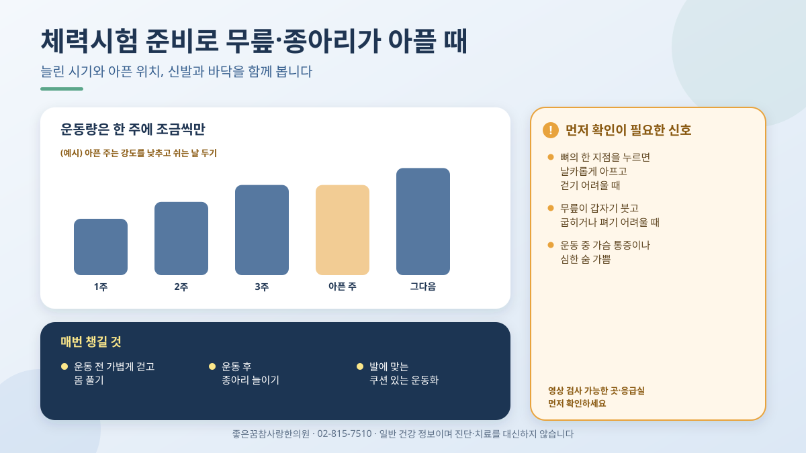
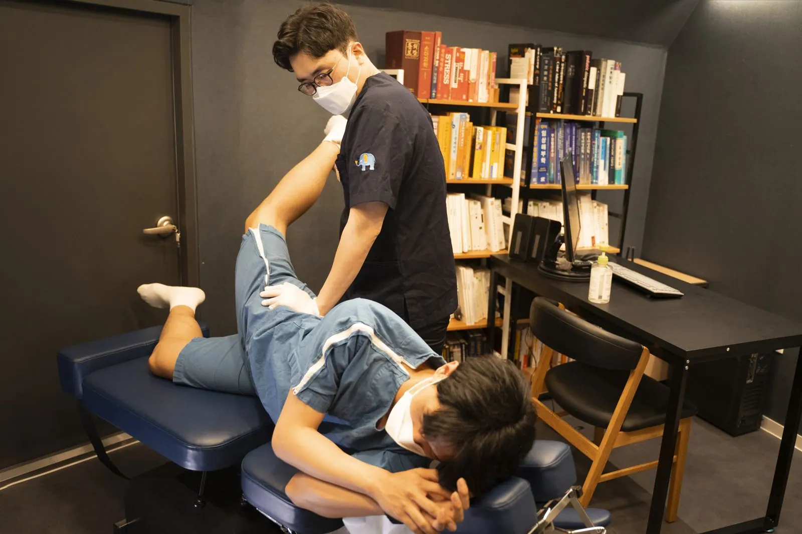

체력시험 준비로 운동량을 갑자기 늘려 무릎과 종아리가 아프다면 거리와 횟수를 조금씩 늘리고 운동 전후 몸풀기, 쿠션 있는 운동화부터 챙기며, 뼈를 누를 때 날카롭게 아프면 먼저 확인이 필요합니다.
여쭙는 것
- 운동량을 언제부터, 얼마나 늘렸나요?
- 달릴 때와 계단을 내려갈 때 중 언제 더 아픈가요?
- 아픈 곳이 무릎 앞, 정강이, 종아리 중 어디인가요?
생활에서 해 볼 것
- 달리는 거리와 횟수를 일주일에 조금씩만 늘리기
- 운동 전 가볍게 걷고 몸 풀기, 운동 후 종아리 늘이기
- 발에 맞는 쿠션이 있는 운동화 신기
한의원에서 함께 살필 것
- 운동을 늘린 뒤 무릎이 아픈 경우 아픈 동작과 다리 정렬을 함께 살핍니다.
- 정강이나 종아리가 계속 아픈 경우 운동량 변화와 신발을 함께 살핍니다.
- 시험 일정이 정해져 있는 경우 남은 기간에 맞춰 운동 강도를 조절하는 방법을 함께…
먼저 확인이 필요한 신호
- 뼈의 한 지점을 누르면 날카롭게 아프고 걷기 어려운 경우
- 무릎이 갑자기 붓고 구부리거나 펴기 어려운 경우
- 운동 중 가슴 통증이나 심한 숨 가쁨이 있었던 경우

운동량은 일주일에 조금씩만 늘리고 아픈 날은 강도를 낮추는 것이 시험 전까지 몸을 지키는 기본입니다. 경찰·소방처럼 체력시험이 있는 시험을 준비하는 분들은 필기 공부 뒤 체력 준비를 몰아서 하는 경우가 있어, 달리기 연습을 시작하고 며칠 만에 무릎과 정강이, 종아리가 아프다는 이야기를 듣습니다. 뼈의 한 지점이 날카롭게 아프거나 무릎이 갑자기 붓는다면 먼저 확인이 필요합니다.
왜 이런 불편이 생길 수 있나요
- 오래 앉아 지내다 갑자기 달리기를 늘리면 근육과 힘줄, 뼈가 적응할 시간이 부족해 통증이 생기기 쉽습니다.
- 딱딱한 바닥과 쿠션이 부족한 신발은 정강이와 무릎으로 전해지는 충격을 키울 수 있습니다.
- 몸을 풀지 않고 바로 뛰거나 운동 뒤 종아리를 늘리지 않으면 다음 날 뭉침이 심해지기도 합니다.
- 아픈 부위를 그대로 계속 쓰면 쉬어야 하는 기간이 오히려 길어질 수 있습니다.

먼저 이렇게 여쭙니다
- 운동량을 언제부터, 얼마나 늘렸나요?
- 달릴 때와 계단을 내려갈 때 중 언제 더 아픈가요?
- 아픈 곳이 무릎 앞, 정강이, 종아리 중 어디인가요?
- 운동 전후에 몸을 풀고 있나요?
일상에서 먼저 해 볼 수 있는 것
- 달리는 거리와 횟수를 일주일에 조금씩만 늘리기
- 운동 전 가볍게 걷고 몸 풀기, 운동 후 종아리 늘이기
- 발에 맞는 쿠션이 있는 운동화 신기
- 아픈 날은 강도를 낮추고 쉬는 날 두기

한의원에서 함께 살필 수 있는 경우
- 운동을 늘린 뒤 무릎이 아픈 경우 아픈 동작과 다리 정렬을 함께 살핍니다.
- 정강이나 종아리가 계속 아픈 경우 운동량 변화와 신발을 함께 살핍니다.
- 시험 일정이 정해져 있는 경우 남은 기간에 맞춰 운동 강도를 조절하는 방법을 함께 정합니다.
좋은꿈참사랑한의원에서는 아픈 곳과 함께 주변 관절과 자세까지 넓게 살피고, 필요하다고 판단될 때 초음파로 확인합니다. 침·약침·추나·온열 가운데 지금 상태에 맞는 방법을 정하고, 귀가 전에는 일상에서 조절할 동작과 다음에 확인할 점을 알려 드립니다.
이렇게 기록해 오시면 상담이 쉬워집니다
- 운동량을 늘린 시기와 일주일 운동 계획(거리, 횟수)
- 아픈 위치(무릎 앞, 정강이 안쪽, 종아리)와 아픈 순간
- 신발 종류와 주로 달리는 바닥
- 체력시험 날짜와 준비하는 종목

이런 증상은 먼저 확인이 필요합니다
- 뼈의 한 지점을 누르면 날카롭게 아프고 걷기 어려운 경우
- 무릎이 갑자기 붓고 구부리거나 펴기 어려운 경우
- 운동 중 가슴 통증이나 심한 숨 가쁨이 있었던 경우
통증이 갑자기 심해지거나 저림·힘 빠짐이 함께 오면 영상 검사가 가능한 의료기관에서 먼저 확인하세요. 복용 중인 진통제나 다른 약은 처방한 의사와 상의 없이 줄이거나 끊지 않습니다. 다친 뒤 갑자기 크게 붓거나 열이 나고, 움직이기 어려울 만큼 아프다면 바로 응급실을 찾으세요.
한눈에 보는 표
| 구분 | 핵심 |
|---|---|
| 여쭙는 것 | 운동량을 언제부터, 얼마나 늘렸나요? 달릴 때와 계단을 내려갈 때 중 언제 더 아픈가요? |
| 생활에서 해 볼 것 | 달리는 거리와 횟수를 일주일에 조금씩만 늘리기 운동 전 가볍게 걷고 몸 풀기, 운동 후 종아리 늘이기 |
| 한의원에서 함께 살필 것 | 운동을 늘린 뒤 무릎이 아픈 경우 아픈 동작과 다리 정렬을 함께 살핍니다. 정강이나 종아리가 계속 아픈 경우 운동량 변화와 신발을 함께 살핍니다. |
| 먼저 확인이 필요한 신호 | 뼈의 한 지점을 누르면 날카롭게 아프고 걷기 어려운 경우 무릎이 갑자기 붓고 구부리거나 펴기 어려운 경우 |
자주 묻는 질문
아파도 시험이 가까우면 계속 연습해야 하나요?
통증이 심해지면 오히려 준비가 길게 멈출 수 있어, 강도를 조절하며 이어가는 방법을 함께 찾는 것을 권합니다.
시험 직전에도 진료를 받을 수 있나요?
네. 시험 일정을 말씀해 주시면 그에 맞춰 무리 없는 방법을 함께 정합니다.
쉬는 날에는 아예 움직이지 말아야 하나요?
아픈 부위에 부담이 적은 걷기나 가벼운 자전거처럼 강도를 낮춘 움직임은 이어가도 되는 경우가 많습니다. 무엇이 괜찮을지는 아픈 곳을 보고 함께 정합니다.
진료 시간은 어떻게 되나요?
좋은꿈참사랑한의원은 평일 09:30~20:00(점심 13:00~14:00), 토·일·공휴일 09:30~15:00에 진료합니다.
이 글은 일반적인 건강 정보이며 개인의 진단이나 치료를 대신하지 않습니다. 증상이 있거나 복용 중인 약이 있다면 진료를 통해 확인하세요. 치료 효과는 개인마다 다를 수 있습니다.
작성 기준: 일반적으로 알려져 있는 건강 정보를 참고해 정리했습니다(대표원장 감수). 증상 기록은 1~2주 동안 하루 1회, 비슷한 시간에 적어 오시면 지난 상태와 비교하기 쉽습니다.
좋은꿈참사랑한의원은 재진 때 지난번 이야기부터 이어서 여쭙니다. 진료시간과 예약은 오시는 길에서 확인하세요.